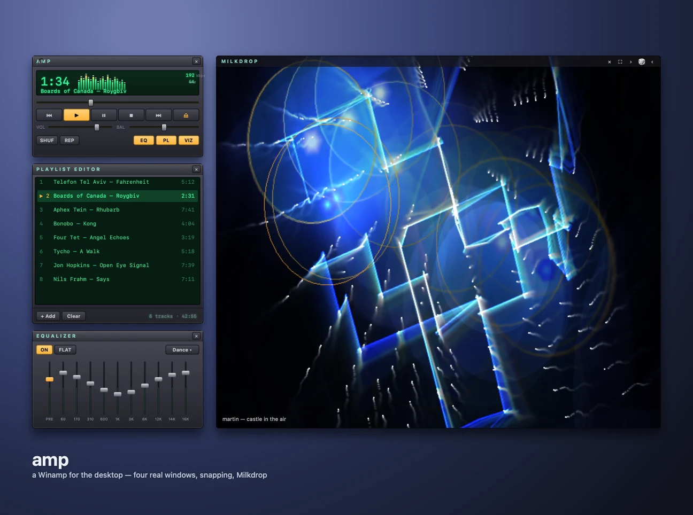
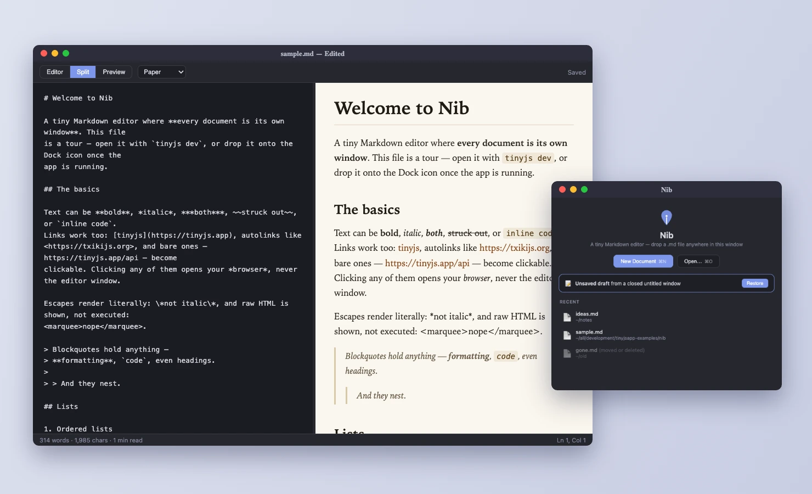

Desktop apps
in ~6 MB.
A JavaScript backend with full system access, a native webview window (WebKit on macOS, WebView2 on Windows, WebKitGTK on Linux), and nothing else. No Electron. No bundled Chromium. No HTTP server. No ports.
curl -fsSL https://tinyjs.app/install | sh
irm https://tinyjs.app/install.ps1 | iex
curl -fsSL https://tinyjs.app/install | sh
sudo apt install libwebkit2gtk-4.1-0) · MITShipped app size
What you get
Page ⇄ backend RPC over a Unix socket in a private temp dir. Nothing listens, nothing collides, nothing to scan.
Backend runs on txiki.js — files, sockets, processes, FFI, sqlite, fetch, WebSocket.
Frontend edits swap into the live window; backend edits restart the process. No build step in dev.
Real menu bar (About + Quit included), file panels, alert / confirm / prompt — answered by AppKit, not divs.
tinyjs build emits a codesigned, notarization-ready bundle with your icon.
Every project ships a skill file, so coding agents already know the whole API.
See it running
A 4.4 MB native app that shelves every example and installs, updates, and removes them in one click. The catalog updates itself from the examples repo — and carries per-platform downloads.

Player, playlist, 10-band EQ and six visualizer engines, each pane a real native window that snaps, docks and windowshades. Plus a podcast deck and a fullscreen 80s hi-fi mode with VU needles and a world-radio globe. Plays mp3 · m4a/aac · flac · wav · aiff · caf · ogg/opus — and, synthesized on the fly in-app, MIDI (real SoundFont banks) and tracker modules (mod · s3m · xm · it, via the OpenMPT engine). A webview can't play any of those last two; amp renders them itself.
⬇ .dmg · 6.5 MB ⬇ .zip · 5.9 MB ⬇ .tar.gz x86_64 arm64 source ↗
Thirteen tabs of live demos: shell, files, HTTP, GPU, WASM, FFI, windows, tray, hotkeys, share sheets, screenshots, battery, clipboard, Spotlight. If you want to know what a call does, press it.
⬇ .dmg · 5.5 MB ⬇ .zip · 4.8 MB ⬇ .tar.gz x86_64 arm64 source ↗
One window per document, editor/preview split, clickable task
boxes, themed PDF and HTML export, lossless closing. Double-click
any .md in Finder and it opens
here.
Quick start
terminal
tinyjs new myapp cd myapp tinyjs dev # window opens, hot reload tinyjs build # dist/myapp.app, signed # (win/linux: dist/myapp.exe or dist/myapp)
src/main.js — the whole backend
export const api = { hello: async ({ name }) => `hi ${name}`, };
in the page
await tiny.api.call('hello', { name }); tiny.menu.set([…]); await tiny.dialog.openFile();